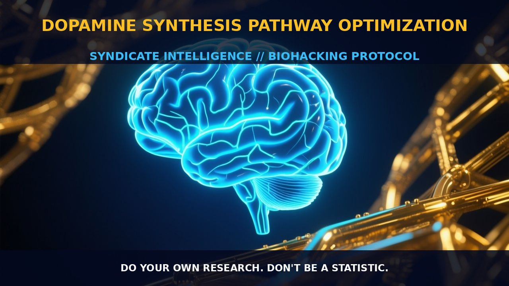

Optimizing Dopamine Synthesis for Enhanced Cognitive and Motor

1. The Mechanism
Dopamine, a crucial neurotransmitter involved in the regulation of reward, motivation, and motor control, is synthesized from the amino acid tyrosine through a series of enzymatic reactions. The first step in this process is the conversion of tyrosine to L-DOPA by the enzyme tyrosine hydroxylase, which is the rate-limiting step. This enzyme requires tetrahydrobiopterin (BH4) as a cofactor, and the reaction is further catalyzed by DOPA decarboxylase to convert L-DOPA to dopamine. This synthesis process is tightly regulated, influenced by factors such as genetic variability, including polymorphisms in the CYP450 system, which can impact the rate and efficiency of dopamine production.
The synthesis of dopamine is essential not only for the brain's reward system but also for regulating motor control and hormone secretion. Dysregulation of dopamine levels can lead to various neuropsychiatric conditions, such as Parkinson's disease, schizophrenia, ADHD, and restless legs syndrome. Understanding the mechanics of dopamine synthesis is vital for biohackers aiming to optimize cognitive and motor functions through supplementation and lifestyle interventions.
2. Biological Leverage
Optimizing the synthesis of dopamine offers significant biological leverage for enhancing cognitive and motor performance. By targeting the early stages of dopamine synthesis, biohackers can support the body's internal regulation mechanisms, minimizing unnecessary side effects that often accompany direct modulation of dopamine receptors. Supplementing with phenylalanine and tyrosine, the precursors to dopamine, can enhance dopamine synthesis without directly stimulating the dopamine receptors. This approach is particularly advantageous as it leverages the body's natural regulatory pathways to maintain homeostasis.
Phenylalanine and tyrosine are essential amino acids that can be obtained through dietary intake or supplementation. These amino acids are converted to dopamine through enzymatic steps involving tyrosine hydroxylase and DOPA decarboxylase. Ensuring adequate availability of these precursors facilitates the synthesis of dopamine at the cellular level. Additionally, supporting the cofactors involved in the synthesis pathway, such as tetrahydrobiopterin (BH4), can further enhance the efficiency of the process. BH4 acts as a critical cofactor for tyrosine hydroxylase, enabling the conversion of tyrosine to L-DOPA. Therefore, supplementing with BH4 can help optimize the rate-limiting step in dopamine synthesis, thereby increasing dopamine production.
3. Tactical Implementation
Practical implementation of dopamine synthesis optimization involves a strategic approach to dosage and timing. For phenylalanine and tyrosine supplementation, doses in the range of 500 to 1000 mg per day are typically recommended. These amino acids should be taken on an empty stomach for optimal absorption, ideally first thing in the morning or between meals. Timing is crucial as the amino acids can compete with other proteins for absorption, so taking them in isolation or with a small amount of fat can enhance their bioavailability.
In addition to phenylalanine and tyrosine, supporting the cofactors involved in dopamine synthesis is equally important. Supplementing with BH4 can help boost the activity of tyrosine hydroxylase. BH4 is usually dosed at 5 to 10 mg per day, although higher doses may be used depending on individual response. It is advisable to take BH4 in conjunction with phenylalanine and tyrosine to enhance the synthesis pathway.
Stacking phenylalanine and tyrosine with other nootropic compounds can further optimize cognitive performance. For instance, combining them with acetyl-L-carnitine (ALCAR) or phosphatidylserine (PS) can support neuronal health and enhance cognitive function. ALCAR and PS are known to support mitochondrial function and synaptic integrity, respectively, thereby providing a synergistic effect when combined with dopamine precursors. Additionally, incorporating vitamins B6 and B12 can support the enzymatic reactions involved in dopamine synthesis, as these vitamins are essential for the activity of DOPA decarboxylase.
Prostar Life Hack
Supplement with phenylalanine and tyrosine, taking 500 to 1000 mg per day on an empty stomach, and ensure you support the cofactors like BH4 to optimize dopamine synthesis.
[ AUTHOR: LEAD TECHNICAL RESEARCHER ]